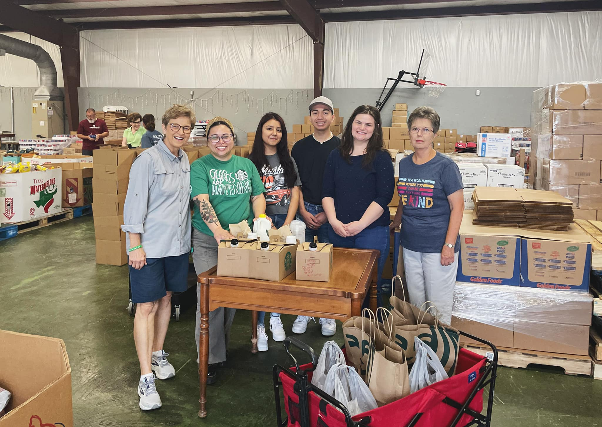

Nuestra misión es:
Nuestra misión es:
Demostrar el amor cristiano
proporcionando alimentos a las personas necesitadas

~ Eventos ~
Martes
Cada dos martes, se entrega comida a los residentes de Silver Lakes y The Oaks que no pueden recoger comida los miércoles.
Miércoles
Todos los miércoles, de 9 am a 12 pm en LifeBridge Community Church, se distribuye comida a los necesitados. Si hay un quinto miércoles en el mes, la despensa está cerrada.
~ Historia ~
La despensa ha estado operando en el área de Sealy desde 1987. Fue organizada por 6 mujeres que miraron alrededor de la comunidad y vieron necesidades de asistencia alimentaria, especialmente niños en edad escolar, personas mayores con ingresos limitados, personas con discapacidades y otras personas que no pueden obtener trabajos. El propósito de la despensa era servir a estas personas. Comenzaron con $60, la ayuda de dos supermercados locales y un garaje prestado.
1987
1997
En 1997, nos mudamos a nuestro propio edificio en Ward Street. Ayudamos a más de 1200 familias ese año, lo que supuso un aumento del 15 % con respecto al año anterior. El número de personas que solicitan y reciben asistencia de la despensa ha aumentado constantemente cada año desde entonces. Eventualmente, tuvimos que comenzar a pensar en cómo podríamos ampliar nuestro edificio para ayudar con nuestras condiciones de hacinamiento.
Luego llegó el 2020 y la pandemia del Covid. Como tantos otros, las operaciones de las despensas de alimentos se vieron gravemente afectadas. No podíamos operar desde nuestro edificio de Ward Street. Nuestras habitaciones estaban demasiado cerca para estar a salvo de Covid. Tuvimos que comenzar una operación de autoservicio. El proceso del Banco de Alimentos de Houston también cambió para ordenar pedidos de alimentos solo en cantidades de paletas completas en lugar de cajas. De hecho, había un mínimo de 5 palets. No había espacio para almacenar paletas enteras de alimentos en la ubicación de Ward Street.
2020
March 2020
Nuestro problema se resolvió en marzo de 2020, cuando nos mudamos a la iglesia comunitaria Lifebridge. Esa instalación de la iglesia es excepcionalmente compatible con nuestras necesidades. Gracias a la generosidad de la iglesia, todavía estamos allí, dos años después.
~ Donar ~
Las donaciones son bienvenidas y apreciadas.
Se pueden hacer apuntando la cámara de su teléfono celular al código QR de Venmo que se muestra a continuación.